32 / 100 — 공포
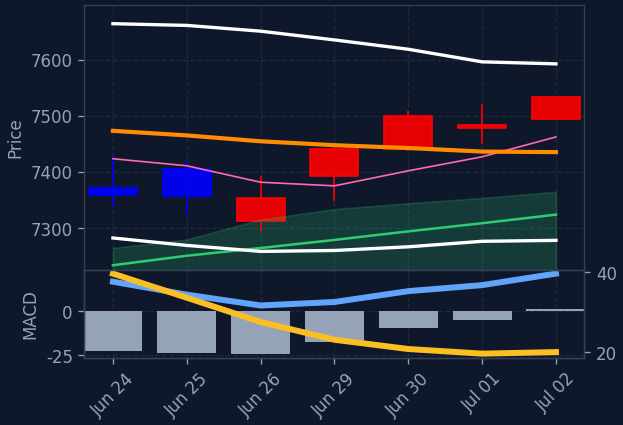
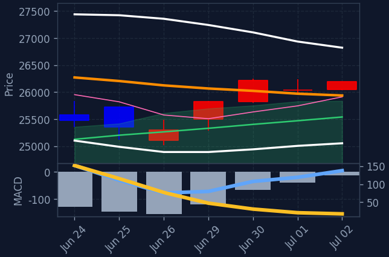
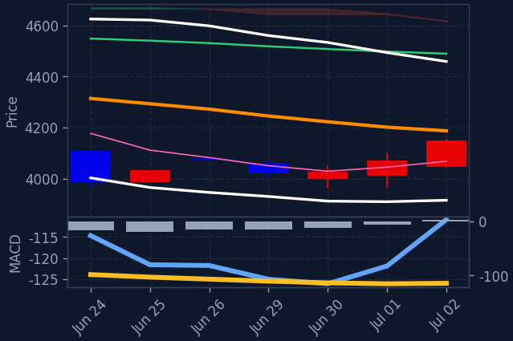
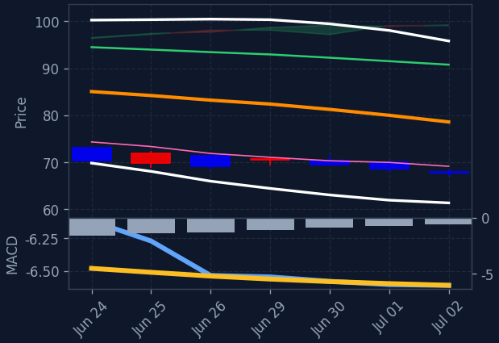
미국 증시는 혼조세를 보이며 혼조세를 보였으며, 특히 기술주와 방산/우주항공, 태양광 섹터가 강세를 보였습니다. 금 가격은 상승했으나 유가는 하락했습니다. 시장은 예상치를 하회한 6월 고용 보고서 발표에 주목했습니다.
6월 고용 보고서가 예상치를 하회하면서 연준의 금리 인상 가능성이 낮아졌다는 분석이 나왔습니다. 이는 시장 전반에 긍정적인 영향을 미쳤으나, 반도체 섹터는 약세를 보이며 지수 상승폭을 제한했습니다. 빅테크 중에서는 애플, 넷플릭스 등이 강세를 보인 반면 메타, 테슬라는 하락했습니다.
방산/우주항공, 태양광/신재생, 에너지, 헬스케어 섹터가 강세를 보이며 시장을 견인했습니다. 기술/IT 섹터는 소폭 상승했으나, 필라델피아 반도체 지수는 하락하며 업종별 차별화가 나타났습니다. 특히 반도체 섹터의 약세는 한국 증시의 반도체 관련주에 대한 투자 심리에 영향을 줄 수 있습니다.
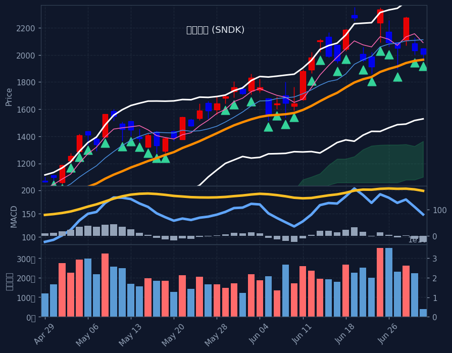
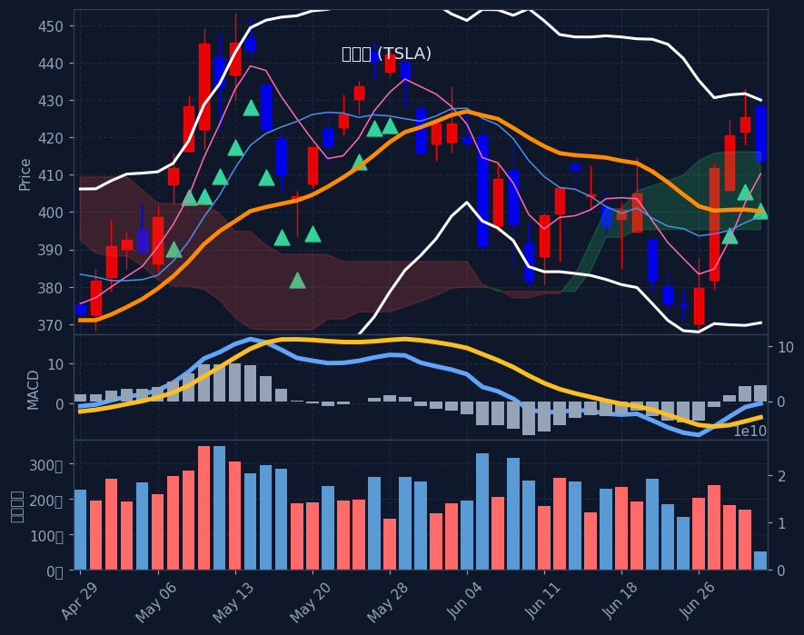
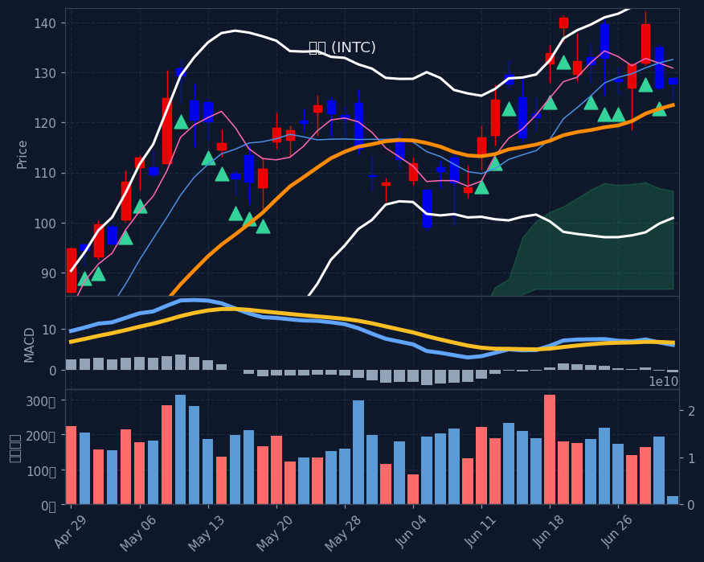
※ S&P500 대상 A/B/C/D 전략별 분류(각 칸 거래대금순). 한 종목이 여러 전략에 잡히면 각 칸에 중복 표기. 백테스트상 기계적 엣지는 약하며 매수 추천이 아닙니다. 판단·책임은 본인.
📅 결제일 6/25~7/1(5거래일) 기준 · 오늘 7/2 기준 약 1일 전 데이터 · T+2 결제 기준(실제 매매는 약 2거래일 전)
💸 한국인 순매수 일평균: +8,457억 (전주 +7,019억 대비 +20.5%) · 5일 총액 +42,283억
※ 예탁결제원(SEIBro) 최근 5거래일 한국인 순매수/순매도 결제금액(T+2) · 6/25~7/1 결제 기준(실제 매매는 약 2거래일 전). 자금이 어디로 유입·유출되는지 참고용.
현재 E(투매 바닥) 신호 없음 — 시장이 바닥권(지수 RSI·공포탐욕 극단)이 아닐 땐 비어있는 게 정상입니다.
※ 투매 바닥(RSI≤30+50선이격+거래량폭증)에서 반등 시작 포착, 4시간봉 RSI도 과매도. 🔥는 지수(나스닥/S&P·코스피)도 RSI<35 동반 바닥(강신호). 떨어지는 칼날 위험 — 매수 추천 아님, 판단·책임 본인.
※ 60일선까지 눌렸다 지지받고 마감한 종목(참고 태그). 백테스트상 다음날 반등 엣지 없음(승률 48~49%·생존편향 포함) 확인됨 — 매수 추천·시그널 아님, 종합점수/Top3에도 미반영. 단순 참고용.
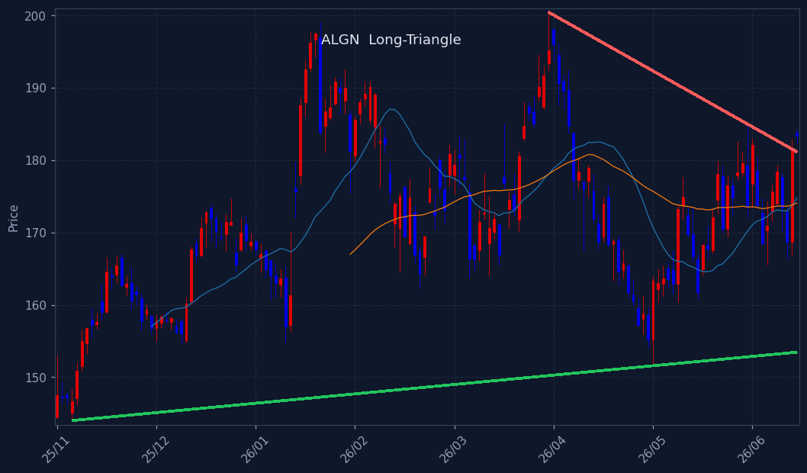
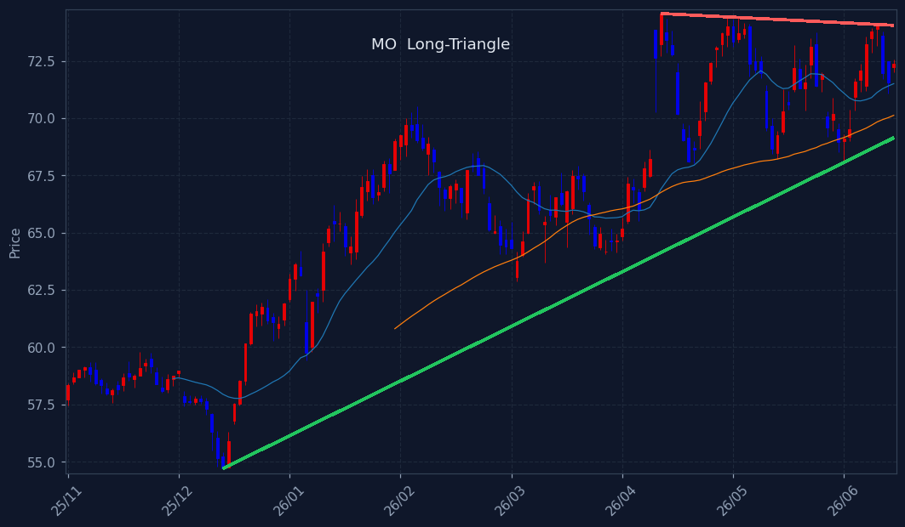
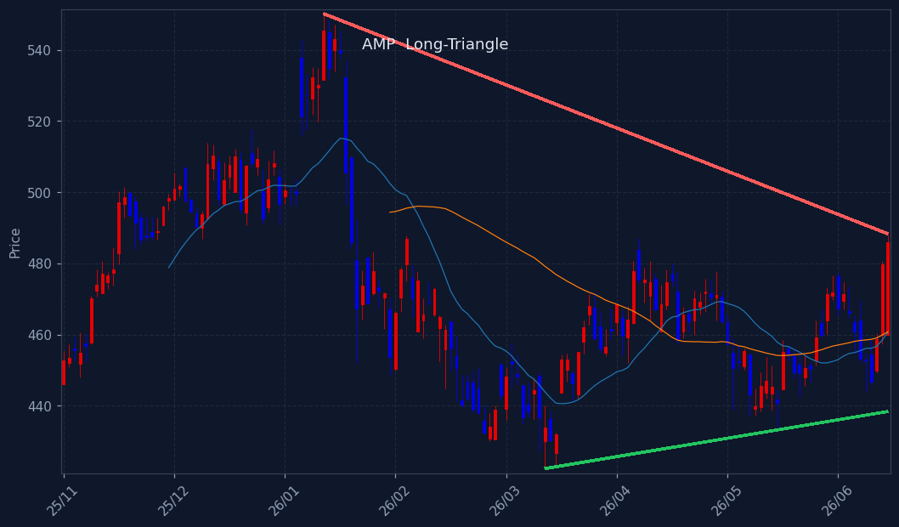
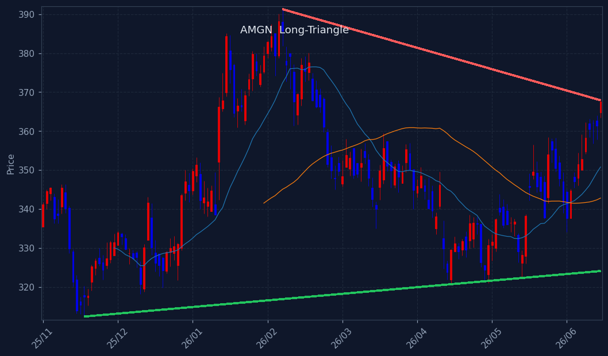
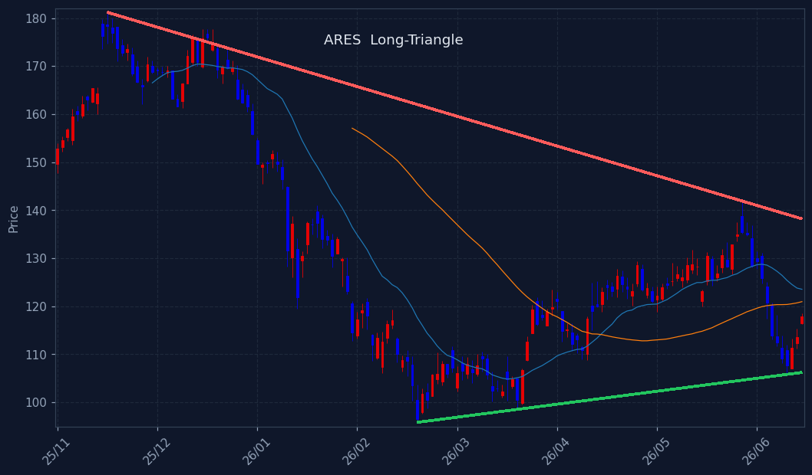
※ 삼각수렴 돌파 임박 종목. 📐장기 삼각수렴(수개월 대형 삼각형, 볼록껍질 추세선+실수축) = 백테스트 491건 승률 66%·평균 +8.7%/20일로 엣지 확인(HOOD·TSLA류 대박 초입). 단기 코일 = 엣지 약함(승률 ~60% 베타 수준). 🔻대칭=고점↓·저점↑ / 🟰바닥지지=저점 평평. 매수추천 아님·종합점수/Top3 미반영(관찰용).